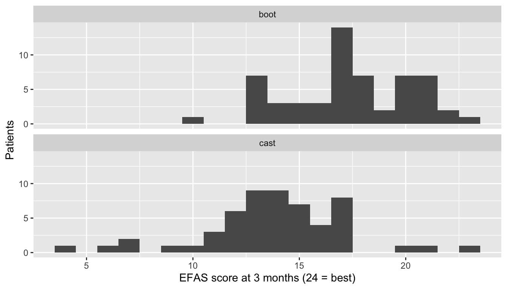

t-Test für unabhängige Stichproben (nach Welch), Mann-Whitney-Test, exakter Test nach Fisher und Chi-Quadrat-Test sowie Log-Rank-Test, jeweils mit Effektstärke und 95%-KI.
Zwei Gruppen verschiedener Patientinnen und Patienten: ein Walker gegen einen Gips in einer Studie, Hamstring- gegen BPTB-Transplantate, Implantat A gegen Implantat C. Das ist der häufigste Vergleich in der klinischen Forschung. Wenn dieselben Patientinnen und Patienten zweimal gemessen wurden oder wenn die Patientinnen und Patienten paarweise gematcht wurden, verwenden Sie stattdessen Seite 7.
Hinweis💡 So funktioniert jeder Abschnitt dieser Seite
Jeder Abschnitt beantwortet eine Frage zu einem der Übungsdatensätze: zu einer randomisierten Studie zu Gips und Walker nach einer Mittelfussverletzung (t-Test und Mann-Whitney-Test), zu VKB-Rekonstruktionen (vorderes Kreuzband; Test nach Fisher) und zur Gelenkersatz-Kohorte (Log-Rank-Test). Die Studie und ihre Resultate sind für den Unterricht erfunden. Der erste Codeblock jedes Abschnitts lädt die Packages und die Daten, sodass Sie direkt zum gewünschten Abschnitt springen können. Führen Sie die Blöcke eines Abschnitts der Reihe nach von oben nach unten aus.
Damit der Code kurz bleibt, verwendet das Beispiel zum Gelenkersatz alle Fälle, auch beide Fälle von Patientinnen und Patienten, die auf beiden Seiten operiert wurden (80 Personen in der ganzen Kohorte; Seite 2 zählt sie). Entscheiden Sie in einer echten Studie, wie Sie mit ihnen umgehen (Seite 3), und halten Sie fest, was Sie getan haben.
t-Test für unabhängige Stichproben
Die Frage: Unterscheidet sich der EFAS-Score 3 Monate nach einer Mittelfussverletzung zwischen Walker und Gips?
Wann verwenden
Die Zielgrösse ist ein Messwert, der zwischen zwei unabhängigen Gruppen verglichen wird.
Sie ist innerhalb jeder Gruppe ungefähr normalverteilt, oder jede Gruppe ist gross (etwa 30 oder mehr) und nicht stark schief (Seite 3).
Ein Score, der mehrere Fragen aufsummiert, wie der EFAS-Score (sechs Fragen mit je 0 bis 4 Punkten, also 0 bis 24), lässt sich als Messwert behandeln, wenn nur wenige Patientinnen und Patienten am Boden oder an der Decke des Scores liegen.
Verwenden Sie die Version nach Welch, die nicht voraussetzt, dass beide Gruppen gleich stark streuen. Sie ist in R der Standard, in Python aber nicht (siehe den Kasten «R oder Python»).
Wenn die Zielgrösse schief ist, sich am Boden oder an der Decke häuft oder ordinal ist → verwenden Sie den Mann-Whitney-Test.
Was der Test wirklich macht
Der t-Test stellt eine einzige Frage: Ist die Differenz zwischen den beiden Mittelwerten gross im Vergleich dazu, wie stark diese Differenz von Stichprobe zu Stichprobe schwanken würde?
Die Differenz der beiden Mittelwerte bilden.
Das Rauschen in dieser Differenz schätzen, ihren Standardfehler. Er wird kleiner, wenn die Gruppen grösser sind, und grösser, wenn die Scores stärker streuen.
Teilen: t = Differenz ÷ Standardfehler. Ein t von 0 bedeutet gar keine Differenz. Ein t jenseits von etwa ±2 bedeutet, dass die Differenz im Vergleich zum Rauschen gross ist.
t in einen p-Wert umrechnen: die Wahrscheinlichkeit für ein t, das mindestens so weit von 0 entfernt ist, wenn beide Gruppen in Wahrheit denselben Mittelwert hätten.
Die Variante nach Welch berechnet den Standardfehler aus der Streuung jeder Gruppe einzeln und braucht deshalb keine gleichen Streuungen. Nach dem Test rechnet ein Kasten unter «Ausgabe lesen» t von Hand nach.
Zuerst die Daten ansehen
In der Studie wurden 120 Patientinnen und Patienten randomisiert, 60 pro Studienarm, und der EFAS-Score (Europäische Gesellschaft für Fuss- und Sprunggelenkchirurgie; 24 ist der beste Wert) wurde nach 6 Wochen, 3 Monaten, 6 Monaten und 12 Monaten gemessen.
library(tidyverse)trial <-read_csv("data/foot_ankle_rct_long.csv", show_col_types =FALSE) # eine Zeile pro Person und Studienvisiteefas_3mo <- trial |>filter(visit =="3mo", !is.na(efas)) |># Personen, die zur Studienvisite nach 3 Monaten kamenmutate(arm =factor(arm, levels =c("boot", "cast"))) # boot zuerst: Differenzen sind boot minus castggplot(efas_3mo, aes(efas)) +geom_histogram(binwidth =1) +facet_wrap(~ arm, ncol =1) +labs(x ="EFAS score at 3 months (24 = best)", y ="Patients")

efas_3mo |>group_by(arm) |>summarise(n =n(), mean =mean(efas), sd =sd(efas), min =min(efas), max =max(efas))
# A tibble: 2 × 6
arm n mean sd min max
<fct> <int> <dbl> <dbl> <dbl> <dbl>
1 boot 57 17.4 2.90 10 23
2 cast 55 13.8 3.39 4 23
import pandas as pdimport pingouin as pgimport matplotlib.pyplot as pltfrom scipy import statstrial = pd.read_csv("data/foot_ankle_rct_long.csv") # eine Zeile pro Person und Studienvisiteefas_3mo = trial[trial["visit"] =="3mo"].dropna(subset=["efas"]) # Personen, die zur Studienvisite nach 3 Monaten kamenefas_boot = efas_3mo.loc[efas_3mo["arm"] =="boot", "efas"]efas_cast = efas_3mo.loc[efas_3mo["arm"] =="cast", "efas"]fig, axes = plt.subplots(2, 1, figsize=(6, 4), sharex=True)axes[0].hist(efas_boot, bins=range(0, 26))axes[0].set_title("boot")axes[1].hist(efas_cast, bins=range(0, 26))axes[1].set_title("cast")axes[1].set_xlabel("EFAS score at 3 months (24 = best)")plt.tight_layout()plt.show()
count mean std min max
arm
boot 57 17.403509 2.896178 10.0 23.0
cast 55 13.818182 3.394390 4.0 23.0
Beide Arme sind ungefähr glockenförmig, keine Person liegt am Boden (0) oder an der Decke (24), und beide Arme sind gross. Der Walker-Arm liegt weiter rechts. Acht Personen verpassten die Studienvisite nach 3 Monaten (3 im Walker-Arm, 5 im Gips-Arm), sodass 112 der 120 randomisierten Personen analysiert werden. Die Spalten min und max bestätigen das: Der tiefste Score ist 4, der höchste 23. Die Tabelle zeigt auch, wer gesehen wurde: 57 + 55 = 112 Personen. Jedem Arm wurden 60 zugeteilt, also verpassten 60 − 57 = 3 Personen mit Walker und 60 − 55 = 5 mit Gips die Kontrolle.
efas_test <-t.test(efas ~ arm, data = efas_3mo) # der t-Test nach Welch ist der Standard in Refas_test
Welch Two Sample t-test
data: efas by arm
t = 6.0036, df = 106.05, p-value = 2.738e-08
alternative hypothesis: true difference in means between group boot and group cast is not equal to 0
95 percent confidence interval:
2.401333 4.769321
sample estimates:
mean in group boot mean in group cast
17.40351 13.81818
efas_test = stats.ttest_ind(efas_boot, efas_cast, equal_var=False) # equal_var=False: t-Test nach Welchprint(efas_test)
t = 6.00: Die Differenz zwischen den Mittelwerten beträgt 6 Standardfehler. Python nennt es statistic.
df = 106.05: Der Test nach Welch passt die Freiheitsgrade an ungleiche Streuungen an, daher sind sie keine ganze Zahl.
p < 0.001: Eine so grosse Differenz wäre sehr unwahrscheinlich, wenn beide Arme denselben mittleren EFAS-Score hätten. R gibt ihn als p-value = 2.738e-08 aus. e-08 bedeutet «den Dezimalpunkt um 8 Stellen nach links verschieben», das ist also 0.000000027; Python gibt dieselbe Zahl als pvalue= aus.
95% CI 2.40 to 4.77: das Konfidenzintervall (KI) für die Differenz der Mittelwerte, Walker minus Gips.
mean in group boot 17.4, mean in group cast 13.8: die beiden Mittelwerte.
Hinweis🔍 Unter der Haube: die t-Statistik von Hand
Die Differenz von 3.6 Punkten ist das 6.00-Fache ihres Standardfehlers von 0.60 Punkten. Das ist das t = 6.00, das der Test ausgegeben hat.
Effektstärke und 95%-KI
Die Mittelwertsdifferenz mit ihrem KI ist die Effektstärke, die am verständlichsten ist: 3.6 Punkte (95%-KI 2.4 bis 4.8). R gibt die beiden Mittelwerte aus und überlässt Ihnen die Subtraktion (17.40 − 13.82 = 3.58); die zweite Zeile von Python gibt die Differenz aus, 3.585, und danach das KI.
Hedges’ g gibt die Differenz in Standardabweichungen an, sodass sich Effekte vergleichen lassen, die auf verschiedenen Skalen gemessen wurden. Als grobe Richtschnur: 0.2 ist klein, 0.5 mittel und 0.8 gross.
Hedges' g | 95% CI
------------------------
1.13 | [0.73, 1.52]
- Estimated using pooled SD.
g = pg.compute_effsize(efas_boot, efas_cast, eftype="hedges")print(g)
1.130200311478461
print(pg.compute_esci(stat=g, nx=len(efas_boot), ny=len(efas_cast), eftype="hedges", decimals=3)) # sein 95%-KI
[0.727 1.534]
Hedges’ g beträgt 1.13: Der Mittelwert des Walker-Arms liegt mehr als eine Standardabweichung höher, ein grosser Effekt. Ob 3.6 Punkte auf einem Score von 24 Punkten für die Patientinnen und Patienten etwas ausmachen, ist eine klinische und keine statistische Frage.
Resultate formulieren
Methods: EFAS scores at 3 months were compared between the arms with Welch’s unpaired t test, in the patients seen at that visit.
Results: At 3 months, the mean EFAS score was 17.4 points (SD 2.9; n = 57) with a boot and 13.8 (SD 3.4; n = 55) with a cast (difference 3.6 points, 95% CI 2.4 to 4.8; Hedges’ g = 1.13, 95% CI 0.73 to 1.52; p < 0.001).
Warnung⚠️ Achtung: Testen Sie die Varianzen nicht vorab
Früher war es üblich, zuerst einen Test auf gleiche Varianzen (etwa nach Levene) durchzuführen und dann je nach Resultat den t-Test nach Student oder nach Welch zu wählen. Tun Sie das nicht: Das zweistufige Vorgehen verzerrt den p-Wert. Verwenden Sie von Anfang an den Test nach Welch. Wenn die Varianzen tatsächlich gleich sind, liefert er fast dieselbe Antwort wie der Test nach Student.
Tipp🔀 R oder Python: Student oder Welch?
Der Standardwert ist verschieden.t.test() in R führt den Test nach Welch aus, ausser Sie fügen var.equal = TRUE hinzu. ttest_ind() in scipy führt den Test nach Student aus, ausser Sie fügen equal_var=False hinzu. Legen Sie ihn in Python immer ausdrücklich fest.
Die Reihenfolge der Gruppen. R subtrahiert in der Reihenfolge der Faktorstufen (wir haben boot an die erste Stelle gesetzt); scipy zieht das zweite Argument vom ersten ab.
Das KI für Hedges’ g. effectsize verwendet eine exakte Methode und pingouin eine Näherung, daher können die KI leicht voneinander abweichen (0.73 bis 1.52 in R, 0.73 bis 1.53 in Python). Die Schätzwerte stimmen auf fünf Dezimalstellen überein: Beide korrigieren g für kleine Stichproben, effectsize mit der exakten Formel und pingouin mit der üblichen Näherung. Die Tabelle von R rundet g auf 1.13; ungerundet liefert R 1.130197 und Python 1.130200.
Mann-Whitney-Test
Die Frage: Unterscheidet sich der Schmerz 6 Wochen nach einer Mittelfussverletzung zwischen Walker und Gips?
Wann verwenden
Die Zielgrösse ist schief, hat einen Decken- oder Bodeneffekt oder ist ordinal, und Sie vergleichen zwei unabhängige Gruppen.
Der Test fragt, ob die Werte der einen Gruppe tendenziell grösser sind als die der anderen: Wenn Sie aus jeder Gruppe zufällig eine Person auswählen, wie wahrscheinlich ist es, dass die erste den höheren Wert hat?
Er ist derselbe Test wie der Wilcoxon-Rangsummentest. R nennt ihn wilcox.test().
Der Mann-Whitney-Test beachtet nicht, wie weit zwei Scores auseinanderliegen. Er schaut nur, welcher der höhere ist.
Jede Person der einen Gruppe mit jeder Person der anderen Gruppe paaren.
In jedem Paar schauen, wer den höheren Score hat. Die Paare zählen, in denen die Person der ersten Gruppe höher liegt; eine Bindung zählt als halbes Paar. Diese Anzahl ist die Teststatistik, U.
Wären die beiden Gruppen gleich, läge die Person der ersten Gruppe in etwa der Hälfte der Paare höher. Je weiter U von der Hälfte aller Paare entfernt ist, desto kleiner der p-Wert.
Software kommt schneller zum selben U. Sie sortiert alle Scores beider Gruppen vom tiefsten zum höchsten und gibt jedem seine Position in dieser Reihe, 1, 2, 3 und so weiter: seinen Rang. Gebundene Scores teilen sich den Mittelwert ihrer Positionen. U ergibt sich dann durch einfaches Rechnen aus der Summe der Ränge einer Gruppe; deshalb heisst der Test auch Rangsummentest. Der Schritt zur Effektstärke weiter unten zählt die Paare für unsere Daten.
Zuerst die Daten ansehen
Die Studie erfasste den Schmerz auf einer numerischen Ratingskala (NRS) von 0 (kein Schmerz) bis 10 (der stärkste vorstellbare Schmerz), in ganzen Zahlen: eine ordinale Skala.
library(tidyverse)trial <-read_csv("data/foot_ankle_rct_long.csv", show_col_types =FALSE) # eine Zeile pro Person und Studienvisitepain_6wk <- trial |>filter(visit =="6wk", !is.na(pain_nrs)) |># Personen, die zur Studienvisite nach 6 Wochen kamenmutate(arm =factor(arm, levels =c("boot", "cast"))) # boot zuerst: Differenzen sind boot minus castggplot(pain_6wk, aes(pain_nrs)) +geom_bar() +# ein Balken pro ganzem Scorefacet_wrap(~ arm, ncol =1) +scale_x_continuous(breaks =0:10) +labs(x ="Pain at 6 weeks (NRS, 0 = none, 10 = worst)", y ="Patients")
Vier Personen verpassten die Studienvisite nach 6 Wochen (2 in jedem Arm), sodass 116 der 120 randomisierten Personen analysiert werden. Die meisten Scores liegen zwischen 2 und 6, und viele Personen haben denselben Score (Bindungen). Bei ganzen Zahlen auf einer ordinalen Skala sind Mediane die passende Zusammenfassung: 4 Punkte mit Walker und 5 mit Gips. (Die Tabelle zeigt 58 Personen pro Arm, also verpassten in jedem Arm 60 − 58 = 2 die Kontrolle.) Das obere Quartil im Walker-Arm, 4.75, ist kein ganzer Score: Sortiert man die 58 Scores, liegt das Quartil zwischen dem 43. (einer 4) und dem 44. (einer 5), und beide Programme setzen es auf drei Viertel des Wegs dazwischen.
pain_test <-wilcox.test(pain_nrs ~ arm, data = pain_6wk,exact =FALSE, correct =TRUE, # siehe den Kasten «R oder Python»conf.int =TRUE) # ergänzt den Hodges-Lehmann-Schätzer und das KIpain_test
Wilcoxon rank sum test with continuity correction
data: pain_nrs by arm
W = 1074.5, p-value = 0.0006596
alternative hypothesis: true location shift is not equal to 0
95 percent confidence interval:
-1.9999535 -0.9999846
sample estimates:
difference in location
-1.000041
# pg.mwu() führt den Mann-Whitney-Test von scipy aus und ergänzt die biseriale Rangkorrelation als Effektstärkepain_test = pg.mwu(pain_boot, pain_cast, method="asymptotic", use_continuity=True) # siehe den Kasten «R oder Python»print(pain_test)
W = 1074.5 (R) oder U_val = 1074.5 (Python): die U-Statistik nach Mann-Whitney für den Walker-Arm, also die Anzahl der Paare (Walker, Gips), bei denen die Person mit Walker mehr Schmerz angab, wobei Bindungen als halbes Paar zählen. Es gibt 58 × 58 = 3,364 Paare, ein U von 1,682 würde also bedeuten, dass keine Tendenz in eine der beiden Richtungen besteht. R nennt sie W.
p < 0.001: Ein solcher Unterschied wäre ungewöhnlich, wenn der Schmerz in beiden Armen gleich verteilt wäre.
difference in location −1.00, 95% CI −2.00 to −1.00 (nur R): der Hodges-Lehmann-Schätzer, siehe unten. R findet ihn durch eine numerische Suche und gibt deshalb −1.000041 und Ähnliches aus; die letzten Stellen sind Rauschen.
RBC = −0.361 (Python): die biseriale Rangkorrelation als Effektstärke, siehe unten.
CLES = 0.319 (Python): die «Common Language Effect Size», U geteilt durch die Anzahl Paare (1,074.5 ÷ 3,364). Sie ist die Wahrscheinlichkeit, dass eine zufällig gewählte Person mit Walker mehr Schmerz angibt als eine zufällig gewählte Person mit Gips, wobei eine Bindung halb zählt.
Effektstärke und 95%-KI
Der Hodges-Lehmann-Schätzer ist der Median der Differenzen zwischen dem Score jeder Person mit Walker und dem Score jeder Person mit Gips: eine typische Differenz, in Punkten.
Die biseriale Rangkorrelation (r) reicht von −1 (jede Person mit Walker gab weniger Schmerz an als jede Person mit Gips) bis +1 (das Gegenteil). 0 bedeutet, dass keine Tendenz in eine der beiden Richtungen besteht.
effectsize::rank_biserial(pain_nrs ~ arm, data = pain_6wk)
r (rank biserial) | 95% CI
----------------------------------
-0.36 | [-0.53, -0.17]
# Woher r kommt: jede Person mit Walker mit jeder Person mit Gips vergleichen (58 × 58 Paare)pain_pairs <-outer(pain_6wk$pain_nrs[pain_6wk$arm =="boot"], # jeder Score mit Walker ... pain_6wk$pain_nrs[pain_6wk$arm =="cast"], # ... minus jeder Score mit Gips"-")length(pain_pairs) # die Anzahl Paare
[1] 3364
# Prozentsatz der Paare, in denen die Person mit Walker weniger, mehr oder gleich viel Schmerz angabround(100*c(less =mean(pain_pairs <0), more =mean(pain_pairs >0), tied =mean(pain_pairs ==0)))
less more tied
61 25 14
sum(pain_pairs >0) +sum(pain_pairs ==0) /2# U von Hand: Paare mit mehr Schmerz im Walker-Arm, Bindungen zählen halb
[1] 1074.5
# Hodges-Lehmann-Schätzer: der Median aller Differenzen Walker minus Gipsdef hodges_lehmann(x, y):return np.median(np.subtract.outer(np.asarray(x), np.asarray(y)))print(hodges_lehmann(pain_boot, pain_cast))
-1.0
# scipy hat dafür kein KI, also ein Bootstrap: auf 9999 neu gezogenen Datensätzen neu berechnen.# method="percentile": bei ganzzahligen Scores kann die Standardmethode von scipy dieses KI nicht bilden (siehe den Kasten «R oder Python»)hl_boot = stats.bootstrap((pain_boot.to_numpy(), pain_cast.to_numpy()), hodges_lehmann, vectorized=False, method="percentile", rng=np.random.default_rng(2026))print(hl_boot.confidence_interval)
print(pain_test["RBC"]) # biseriale Rangkorrelation r
MWU -0.361177
Name: RBC, dtype: float64
# Woher r kommt: jede Person mit Walker mit jeder Person mit Gips vergleichen (58 × 58 Paare)pain_pairs = np.subtract.outer(pain_boot.to_numpy(), pain_cast.to_numpy()) # jeder Score mit Walker minus jeder Score mit Gipsprint(pain_pairs.size) # die Anzahl Paare
3364
# Prozentsatz der Paare, in denen die Person mit Walker weniger, mehr oder gleich viel Schmerz angabpair_shares = {"less": (pain_pairs <0).mean(), "more": (pain_pairs >0).mean(), "tied": (pain_pairs ==0).mean()}print({name: round(100* share) for name, share in pair_shares.items()})
{'less': 61, 'more': 25, 'tied': 14}
print((pain_pairs >0).sum() + (pain_pairs ==0).sum() /2) # U von Hand: Paare mit mehr Schmerz im Walker-Arm, Bindungen zählen halb
1074.5
Mit Walker war der Schmerz typischerweise 1 Punkt tiefer (95%-KI 2 Punkte tiefer bis 1 Punkt tiefer), und r = −0.36. Die letzten Codezeilen zeigen, woher r kommt. Von allen 3,364 Paaren (Walker, Gips) gab die Person mit Walker in 61 % weniger Schmerz an, in 25 % mehr, und 14 % waren gebunden. r ist die Differenz zwischen dem Anteil «mehr» und dem Anteil «weniger»: 0.25 − 0.61 = −0.36. U zählt dieselben Paare, wie die letzte Zeile von Hand zeigt: 1,074.5, das W (R) oder U_val (Python), das der Test ausgegeben hat. Und 1,074.5 ÷ 3,364 = 0.32, der Anteil «mehr» plus der halbe Anteil der Bindungen (0.25 + 0.07). Bei ganzzahligen Scores ist jede Differenz zwischen zwei Personen eine ganze Zahl, daher liegen auch der Hodges-Lehmann-Schätzer und sein KI auf ganzen Zahlen, und der Schätzwert kann am Rand seines eigenen KI liegen, wie hier.
Hinweis🔍 Unter der Haube: warum der Standard-Bootstrap von scipy hier nan liefert
Die Standardmethode von scipy für den Bootstrap (BCa) justiert ihr Intervall danach, wie stark sich der Schätzwert ändert, wenn man jeweils eine Person weglässt. Bei ganzzahligen Scores kann der Hodges-Lehmann-Schätzer nur auf ganzen oder halben Punkten liegen, und hier ändert er sich gar nicht:
boot_scores <- pain_6wk$pain_nrs[pain_6wk$arm =="boot"]cast_scores <- pain_6wk$pain_nrs[pain_6wk$arm =="cast"]# Jeweils eine Person weglassen und den Schätzwert ohne sie neu berechnenleave_one_out <-c(sapply(seq_along(boot_scores), function(i) median(outer(boot_scores[-i], cast_scores, "-"))),sapply(seq_along(cast_scores), function(i) median(outer(boot_scores, cast_scores[-i], "-"))))table(leave_one_out) # wie oft jeder Wert vorkam
leave_one_out
-1
116
# Jeweils eine Person weglassen und den Schätzwert ohne sie neu berechnenleave_one_out = ([hodges_lehmann(pain_boot.drop(i), pain_cast) for i in pain_boot.index]+ [hodges_lehmann(pain_boot, pain_cast.drop(i)) for i in pain_cast.index])print(pd.Series(leave_one_out).value_counts()) # wie oft jeder Wert vorkam
-1.0 116
Name: count, dtype: int64
Alle 116 Schätzwerte sind −1. BCa braucht Schätzwerte, die variieren, und liefert deshalb nan mit einer Warnung; die Perzentilmethode verwendet sie nicht.
Resultate formulieren
Methods: Pain at 6 weeks (NRS 0 to 10, an ordinal scale) was compared between the arms with the Mann-Whitney test, in the patients seen at that visit, with the Hodges-Lehmann estimate of the difference and its 95% CI as the effect size.
Results: At 6 weeks, pain was a median of 4 points (IQR 3 to 4.75; n = 58) with a boot and 5 (IQR 4 to 6; n = 58) with a cast (Hodges-Lehmann difference −1 point, 95% CI −2 to −1; rank-biserial r = −0.36, 95% CI −0.53 to −0.17; p < 0.001).
Warnung⚠️ Achtung: Es ist kein Test der Mediane
Der Mann-Whitney-Test fragt, ob die Werte der einen Gruppe tendenziell grösser sind, nicht, ob sich die Mediane unterscheiden. Zwei Gruppen können denselben Median und einen signifikanten Mann-Whitney-Test haben (wenn ihre Verteilungen verschieden geformt sind), oder verschiedene Mediane und einen nicht signifikanten. Berichten Sie die Mediane, um die Gruppen zu beschreiben, schreiben Sie aber nicht «die Mediane unterschieden sich signifikant».
Tipp🔀 R oder Python: Standardwerte beim Mann-Whitney-Test
Exakt oder näherungsweise. Bei Bindungen (wie hier) verwenden beide Programme eine Normalapproximation. Ohne Bindungen berechnet R bei Gruppen unter 50 einen exakten p-Wert, scipy nur bei sehr kleinen Gruppen. Wir setzen exact = FALSE in R und method="asymptotic" in Python, damit beide immer übereinstimmen.
Stetigkeitskorrektur. Beide Programme wenden sie bei der Näherung standardmässig an; wir setzen sie trotzdem ausdrücklich.
Das Hodges-Lehmann-KI. R berechnet es durch Umkehrung des Tests; der Python-Code verwendet einen Bootstrap, also eine andere Methode. Bei ganzzahligen Scores bewegt sich der Schätzwert kaum: Lässt man eine beliebige Person weg, ergibt sich weiterhin −1 (der Kasten unter «Effektstärke und 95%-KI» zeigt es). Die Standardmethode von scipy für den Bootstrap (BCa) braucht aber Schätzwerte, die variieren, wenn man jeweils eine Person weglässt, und liefert deshalb hier nan mit einer Warnung. Die Perzentilmethode (method="percentile") braucht sie nicht. Hier stimmen die beiden KI überein (−2.00 bis −1.00); bei anderen Daten können sie leicht voneinander abweichen.
Das KI für r. effectsize gibt ein 95%-KI für die biseriale Rangkorrelation r aus. mwu() von pingouin liefert r (die Spalte RBC) ohne KI; das KI im Results-Satz stammt also aus R.
Exakter Test nach Fisher und Chi-Quadrat-Test
Die Frage: Unterscheidet sich die Häufigkeit von Transplantatversagen innerhalb von 2 Jahren nach einer VKB-Rekonstruktion zwischen einem Hamstring-Transplantat und einem Knochen-Patellarsehnen-Knochen-Transplantat (BPTB)?
Wann verwenden
Die Zielgrösse ist Ja/Nein, verglichen zwischen zwei unabhängigen Gruppen: eine 2 × 2-Tabelle.
Der exakte Test nach Fisher gilt für jede Stichprobengrösse. Der Chi-Quadrat-Test ist eine Näherung für grosse Stichproben: Verwenden Sie ihn nur, wenn jede erwartete Häufigkeit mindestens 5 beträgt. Im Zweifel verwenden Sie den Test nach Fisher.
Wenn die Patientinnen und Patienten unterschiedlich lang nachbeobachtet wurden und das Ereignis jederzeit eintreten kann → Log-Rank-Test.
Was der Test wirklich macht
Beide Tests vergleichen die beobachtete Tabelle mit der Tabelle, die zu erwarten wäre, wenn das Transplantatversagen nichts mit dem Transplantat zu tun hätte.
Der Chi-Quadrat-Test
Für jede der vier Zellen die erwartete Häufigkeit berechnen: Zeilensumme × Spaltensumme ÷ Gesamtsumme. So viele Fälle wären zu sehen, wenn beide Transplantate gleich häufig versagten.
Für jede Zelle (beobachtet − erwartet)² ÷ erwartet berechnen und die vier Ergebnisse addieren. Die Summe ist die Teststatistik, χ²: 0, wenn die Tabelle genau den erwarteten Häufigkeiten entspricht, und umso grösser, je weiter sie davon entfernt ist.
χ² mit der Chi-Quadrat-Verteilung in einen p-Wert umrechnen. Dieser Schritt ist eine Näherung, und eine schlechte, wenn erwartete Häufigkeiten klein sind. Daher kommt die Regel «mindestens 5».
Der exakte Test nach Fisher braucht keine Näherung. Er hält die Zeilen- und Spaltensummen fest und listet jede Tabelle auf, die diese Summen haben könnte. Er berechnet die exakte Wahrscheinlichkeit jeder dieser Tabellen und addiert die Wahrscheinlichkeiten aller Tabellen, die nicht wahrscheinlicher sind als Ihre. Diese Summe ist der p-Wert.
Zuerst die Daten ansehen
Die VKB-Daten enthalten eine Zeile pro primärer Rekonstruktion. Alle wurden mindestens 2 Jahre nachbeobachtet, ausser das Transplantat versagte vorher; das Versagen innerhalb von 2 Jahren (failure_2y) ist also für jede Rekonstruktion bekannt. Bei zwei Ja/Nein-Variablen heisst «Ansehen», die 2 × 2-Tabelle mit dem Prozentsatz in jeder Gruppe zu betrachten.
6 von 154 Hamstring-Transplantaten (3.9 %) und 6 von 129 BPTB-Transplantaten (4.7 %) versagten innerhalb von 2 Jahren. Die Zeilensummen sind 6 + 148 = 154 und 6 + 123 = 129. Die Prozentsätze stehen in der Spalte yes der zweiten Tabelle (Spalte 1 in Python), mal 100.
Fisher's Exact Test for Count Data
data: failure_table
p-value = 0.7754
alternative hypothesis: true odds ratio is not equal to 1
95 percent confidence interval:
0.2163564 3.1962761
sample estimates:
odds ratio
0.8316302
chisq.test(failure_table)$expected # alle mindestens 5, also ist auch der Chi-Quadrat-Test in Ordnung
failed
graft yes no
hamstring 6.530035 147.47
BPTB 5.469965 123.53
Fisher’s test, p-value = 0.7754: Eine Tabelle wie diese wäre häufig, wenn das Versagen nicht mit dem Transplantat zusammenhinge. Wir berichten p = 0.775.
odds ratio 0.83, 95% CI 0.22 to 3.20 (R): die Effektstärke, siehe unten.
Erwartete Häufigkeiten: was jede Zelle enthielte, wenn das Versagen nicht mit dem Transplantat zusammenhinge. Alle betragen mindestens 5, aber nur knapp (die kleinste ist 5.5), daher ist auch der Chi-Quadrat-Test gültig.
X-squared = 0.0003, p-value = 0.986: der Chi-Quadrat-Test mit Stetigkeitskorrektur nach Yates stimmt überein.
uncorrected = stats.chi2_contingency(failure_table, correction=False) # die Software, ohne die Stetigkeitskorrektur nach Yatesprint(uncorrected.statistic, uncorrected.pvalue)
0.09856165459872664 0.7535625801260732
Die Summe von Hand ist 0.099, dasselbe χ², das die Software ohne die Stetigkeitskorrektur nach Yates liefert (p = 0.754). Der Test oben gab 0.0003 aus, weil R und scipy bei einer 2 × 2-Tabelle die Korrektur anwenden, wenn man nichts anderes angibt; der nächste Kasten erklärt sie.
Hinweis🔍 Unter der Haube: Stetigkeitskorrektur nach Yates
Der Chi-Quadrat-Test behandelt Häufigkeiten so, als könnten sie jeden Wert annehmen, doch es sind ganze Zahlen. Bei einer 2 × 2-Tabelle zieht die Korrektur nach Yates vor dem Quadrieren von jeder Differenz |beobachtet − erwartet| 0.5 ab, was den p-Wert vergrössert (vorsichtiger). Sie soll den p-Wert näher an den des Tests nach Fisher bringen, kann aber über das Ziel hinausschiessen, wie hier: Jede beobachtete Häufigkeit liegt nur etwa eine halbe Einheit von ihrer erwarteten Häufigkeit entfernt (6 Versagen gegenüber erwarteten 6.5 und 5.5), sodass die korrigierte Statistik fast 0 beträgt und p = 0.986 ist, gegenüber 0.775 beim Test nach Fisher. Sowohl chisq.test() in R als auch chi2_contingency() in scipy wenden sie bei 2 × 2-Tabellen standardmässig an; ohne sie (correct = FALSE, correction=False) ist p = 0.754. Beides ist akzeptabel, wenn Sie angeben, welches Sie verwendet haben; bei kleinen Häufigkeiten ist der Test nach Fisher vorzuziehen.
Effektstärke und 95%-KI
Zwei Effektstärken, und es lohnt sich, beide zu berichten:
Die Risikodifferenz: die Differenz zwischen den beiden Prozentsätzen, in Prozentpunkten. Sie ist für Patientinnen und Patienten wie für Ärztinnen und Ärzte verständlich. Sein KI ist hier das einfache Intervall «Schätzwert ± 1.96 Standardfehler», das Wald-KI heisst: prop.test(..., correct = FALSE) in R, method="wald" in Python.
Das Odds Ratio: die Odds für Versagen mit einem Hamstring-Transplantat geteilt durch die Odds mit einem BPTB-Transplantat. Es ist das, was die logistische Regression berichtet (Seite 11), und eignet sich daher für den Vergleich mit anderen Studien.
failure_or = odds_ratio(failure_table.to_numpy(), kind="conditional") # dasselbe Odds Ratio wie in Rprint(failure_or.statistic, failure_or.confidence_interval())
Die Versagensrate mit einem Hamstring-Transplantat war 0.8 Prozentpunkte tiefer (95%-KI 5.5 Punkte tiefer bis 4.0 Punkte höher), ein Odds Ratio von 0.83 (95%-KI 0.22 bis 3.20). Die beiden Versagensraten sind 3.9 % und 4.7 %, die Risikodifferenz ist also 3.9 − 4.7 = −0.8 Prozentpunkte. Das KI wird als Anteile ausgegeben, −0.055 und 0.040; mal 100 sind das −5.5 bis 4.0 Punkte.
Resultate formulieren
Methods: Graft failure within 2 years was compared between hamstring and BPTB grafts with Fisher’s exact test. Effect sizes are reported as risk differences with Wald 95% CIs and as odds ratios with exact 95% CIs.
Results: Graft failure within 2 years followed 6 of 154 hamstring reconstructions (3.9%) and 6 of 129 BPTB reconstructions (4.7%) (risk difference −0.8 percentage points, 95% CI −5.5 to 4.0; odds ratio 0.83, 95% CI 0.22 to 3.20; p = 0.775).
Warnung⚠️ Achtung: «Kein Unterschied» braucht ein schmales KI
Das KI des Odds Ratio reicht von 0.22 bis 3.20: Die Daten sind damit vereinbar, dass ein Hamstring-Transplantat nur ein Fünftel der Odds für Versagen eines BPTB-Transplantats hat oder aber das Dreifache. Bei nur 12 Versagen kann diese Studie das nicht entscheiden. «Kein signifikanter Unterschied» ist die ehrliche Formulierung; «Hamstring- und BPTB-Transplantate versagen gleich häufig» ist es nicht.
Tipp🔀 R oder Python: zwei verschiedene Odds Ratios
fisher_exact() in scipy gibt das einfache Stichproben-Odds-Ratio (a × d) / (b × c) an, hier 0.8311. fisher.test() in R gibt das bedingte Maximum-Likelihood-Odds-Ratio an, 0.8316, das zu seinem exakten KI gehört. Verwenden Sie scipy.stats.contingency.odds_ratio(..., kind="conditional"), um die Zahl und das KI von R zu erhalten. Die beiden liegen immer nahe beieinander; geben Sie an, welches Sie berichten. In unserer Tabelle ist das Odds Ratio der Stichprobe (6 × 123) / (148 × 6) = 0.8311.
Log-Rank-Test
Die Frage: Unterscheidet sich das revisionsfreie Überleben zwischen Implantat A und Implantat C?
Wann verwenden
Die Zielgrösse ist die Zeit bis zu einem Ereignis (Revision), die Patientinnen und Patienten wurden unterschiedlich lang nachbeobachtet, und Sie vergleichen zwei unabhängige Gruppen.
Er vergleicht die gesamten Überlebenskurven, nicht das Überleben zu einem einzelnen Zeitpunkt.
Der Mantel-Haenszel-Test (oder Mantel-Cox-Test) in der Entscheidungstabelle ist derselbe Test unter einem anderen Namen.
Er hat die grösste Teststärke, wenn der Hazard der einen Gruppe über die Zeit ein gleichbleibendes Vielfaches des Hazards der anderen ist (proportionale Hazards; der Hazard ist die momentane Ereignisrate). Wenn sich die Kurven kreuzen, siehe Seite 14.
Um drei oder mehr Gruppen zu vergleichen oder für andere Variablen zu adjustieren → Cox-Regression.
Was der Test wirklich macht
Der Log-Rank-Test vergleicht die beiden Gruppen über die ganze Nachbeobachtung, eine Revision nach der anderen.
Bei der Operation beginnen und in der Zeit vorwärtsgehen. Bei jeder Revision schauen, wer unmittelbar davor noch nachbeobachtet wurde: die Personen unter Risiko.
Hätten beide Implantate dasselbe Risiko, könnte diese Revision jede Person unter Risiko gleich wahrscheinlich treffen. Der erwartete Anteil jeder Gruppe an der Revision ist also einfach ihr Anteil an den Personen unter Risiko.
Diese Anteile über alle Revisionen addieren. Am Ende hat jede Gruppe eine beobachtete und eine erwartete Anzahl Revisionen.
Die Teststatistik misst, wie weit beobachtet von erwartet entfernt ist, im Vergleich dazu, wie weit der Zufall allein sie auseinanderbrächte. Ein grosser Abstand ergibt einen kleinen p-Wert.
Wer die Studie früh verlässt, ist zensiert: Die Person zählt so lange zu den Personen unter Risiko, wie sie nachbeobachtet wurde, und danach nicht mehr.
N: Patientinnen und Patienten in jeder Gruppe (246 mit Implantat A, 137 mit C).
Observed / Expected: die Revisionen, die jede Gruppe hatte, und die Anzahl, die sie gehabt hätte, wenn beide Implantate dasselbe Risiko hätten. Implantat C hatte 38 Revisionen, wo 21.1 erwartet wurden; Implantat A hatte 25, wo 41.9 erwartet wurden.
Chisq = 20.5 on 1 degree of freedom, p < 0.001: So unterschiedliche Kurven wären sehr unwahrscheinlich, wenn die Implantate dasselbe Revisionsrisiko hätten. R gibt den p-Wert als p= 6e-06 aus, das ist 0.000006 (der Dezimalpunkt rückt 6 Stellen nach links).
Python gibt nur zwei Zahlen aus: die Teststatistik (20.53) und den p-Wert. N, Observed und Expected stehen in der Ausgabe von R; der Kasten unten berechnet beobachtet und erwartet von Hand in beiden Sprachen. Die letzte Spalte von R, (O-E)^2/V, ist noch einmal die Teststatistik; (O-E)^2/E können Sie ignorieren.
Hinweis🔍 Unter der Haube: beobachtete und erwartete Revisionen von Hand
revision_times <-sort(unique(a_vs_c$followup_years[a_vs_c$revised ==1])) # jeder Zeitpunkt, an dem eine Revision eintratexpected_a <-sum(sapply(revision_times, function(time) { at_risk <- a_vs_c$followup_years >= time # Schritt 1: unmittelbar vor diesem Zeitpunkt noch nachbeobachtet revisions <-sum(a_vs_c$followup_years == time & a_vs_c$revised ==1) # Revisionen zu diesem Zeitpunkt (meist 1) revisions *sum(at_risk & a_vs_c$implant =="A") /sum(at_risk) # Schritt 2: der erwartete Anteil von Implantat A daran})) # Schritt 3: über alle Zeitpunkte addierenc(observed_a =sum(a_vs_c$revised[a_vs_c$implant =="A"]), expected_a = expected_a)
observed_a expected_a
25.00000 41.93934
revision_times =sorted(a_vs_c.loc[a_vs_c["revised"] ==1, "followup_years"].unique()) # jeder Zeitpunkt, an dem eine Revision eintratexpected_a =0.0for time in revision_times: at_risk = a_vs_c["followup_years"] >= time # Schritt 1: unmittelbar vor diesem Zeitpunkt noch nachbeobachtet revisions = ((a_vs_c["followup_years"] == time) & (a_vs_c["revised"] ==1)).sum() # Revisionen zu diesem Zeitpunkt (meist 1) expected_a += revisions * (at_risk & (a_vs_c["implant"] =="A")).sum() / at_risk.sum() # Schritte 2 und 3: der erwartete Anteil von Implantat A, aufaddiertprint(a["revised"].sum(), expected_a)
25 41.93933651452793
Implantat A hatte 25 Revisionen, wo 41.9 zu erwarten gewesen wären, wenn beide Implantate dasselbe Risiko hätten. Das sind die Zahlen Observed und Expected in der Ausgabe von R; lifelines gibt sie nicht aus, wer mit Python arbeitet, sieht sie also hier.
Effektstärke und 95%-KI
Der Log-Rank-Test hat keine eigene Effektstärke. Üblich ist das Hazard Ratio aus einem Cox-Modell: wievielmal höher der Hazard einer Revision in jedem Moment mit Implantat C ist als mit Implantat A. Seite 14 erklärt die Cox-Regression ausführlich.
implant_cox <-coxph(Surv(followup_years, revised) ~ implant, data = a_vs_c)summary(implant_cox)$conf.int # exp(coef) ist das Hazard Ratio, C gegenüber A
survival_5 <-summary(survfit(Surv(followup_years, revised) ~ implant, data = a_vs_c,conf.type ="log-log"), times =5)survival_5
Call: survfit(formula = Surv(followup_years, revised) ~ implant, data = a_vs_c,
conf.type = "log-log")
implant=A
time n.risk n.event survival std.err lower 95% CI
5.0000 104.0000 21.0000 0.8986 0.0214 0.8475
upper 95% CI
0.9332
implant=C
time n.risk n.event survival std.err lower 95% CI
5.0000 52.0000 33.0000 0.7114 0.0442 0.6146
upper 95% CI
0.7880
for km in [km_a, km_c]: ci_5 = km.confidence_interval_survival_function_.loc[:5].iloc[-1] # letzter Schritt bei oder vor 5 Jahrenprint(km.label, km.survival_function_at_times(5).iloc[0], ci_5.to_list())
A 0.898565220702258 [0.8474849510472157, 0.9332064896432269]
C 0.7113766756342532 [0.6145981267706867, 0.7880063762308811]
Lesen Sie die Spalte survival und ihre beiden KI-Spalten (R) oder die drei Zahlen jeder Zeile (Python), mal 100: 89.9 % (84.7 % bis 93.3 %) mit Implantat A und 71.1 % (61.5 % bis 78.8 %) mit Implantat C.
Resultate formulieren
Methods: Revision-free survival was estimated with the Kaplan-Meier method and compared between implants with the log-rank test. Hazard ratios were estimated with Cox proportional hazards regression.
Results: Revision-free survival at 5 years was 71.1% (95% CI 61.5% to 78.8%) with implant C and 89.9% (95% CI 84.7% to 93.3%) with implant A (log-rank p < 0.001; hazard ratio 3.04, 95% CI 1.83 to 5.04).
Warnung⚠️ Achtung: Überlappende KI sind kein Test
Die KI der beiden Kurven zu einem Zeitpunkt zu vergleichen («die KI nach 5 Jahren überlappen, also gibt es keinen Unterschied») ist kein gültiger Test, und der Vergleich der rohen Anteile von Patientinnen und Patienten mit einer Revision ist es ebenso wenig. Verwenden Sie den Log-Rank-Test für die ganzen Kurven. Und wie auf Seite 4 werden Todesfälle hier als zensiert behandelt; Seite 13 behandelt konkurrierende Risiken.
Tipp🔀 R oder Python: eine Formel oder zwei Gruppen
survdiff() in R nimmt eine Formel mit einer Gruppierungsvariable. logrank_test() in lifelines nimmt die Nachbeobachtungszeiten und Ereignisse jeder Gruppe getrennt (multivariate_logrank_test() nimmt eine Gruppierungsspalte). Sie berechnen denselben Test. Beide Cox-Modelle behandeln gebundene Revisionszeiten mit der Methode von Efron, daher stimmen die Hazard Ratios überein. Der R-Code setzt conf.type = "log-log", weil lifelines diese KI-Methode verwendet (Seite 4).
Übungen
Die Lösungen verwenden die Packages und Daten, die in den obigen Abschnitten geladen wurden. Führen Sie die Seite daher zuerst von oben nach unten aus.
1. Vergleichen Sie den EFAS-Score nach 6 Wochen zwischen dem Walker- und dem Gips-Arm mit dem t-Test nach Welch. Berichten Sie Mittelwert und Standardabweichung (SD) jedes Arms sowie die Mittelwertsdifferenz mit ihrem 95%-KI.
Welch Two Sample t-test
data: efas by arm
t = 5.548, df = 113.48, p-value = 1.915e-07
alternative hypothesis: true difference in means between group boot and group cast is not equal to 0
95 percent confidence interval:
1.884416 3.977653
sample estimates:
mean in group boot mean in group cast
12.43103 9.50000
efas_6wk |>group_by(arm) |>summarise(n =n(), mean =mean(efas), sd =sd(efas))
# A tibble: 2 × 4
arm n mean sd
<fct> <int> <dbl> <dbl>
1 boot 58 12.4 2.75
2 cast 58 9.5 2.94
count mean std
arm
boot 58 12.431034 2.747324
cast 58 9.500000 2.939447
Results: At 6 weeks, the mean EFAS score was 12.4 points (SD 2.7; n = 58) with a boot and 9.5 (SD 2.9; n = 58) with a cast (difference 2.9 points, 95% CI 1.9 to 4.0; p < 0.001).
Die Tabelle von R zeigt drei Ziffern: Die SD von 2.75 im Walker-Arm ist gerundet 2.747, auf eine Dezimalstelle also 2.7. Die Differenz ist 12.43 − 9.50 = 2.93.
2. Unterscheidet sich der EFAS-Score nach 12 Monaten zwischen den Armen? Sehen Sie sich zuerst die Daten an und wählen Sie dann den Test.
TippLösung
Nach 12 Monaten liegen viele Personen an oder nahe an der Decke von 24 (13 % mit Walker und 17 % mit Gips erzielten 24), also der Mann-Whitney-Test.
wilcox.test(efas ~ arm, data = efas_12mo, exact =FALSE, correct =TRUE)
Wilcoxon rank sum test with continuity correction
data: efas by arm
W = 1136, p-value = 0.2913
alternative hypothesis: true location shift is not equal to 0
effectsize::rank_biserial(efas ~ arm, data = efas_12mo)
r (rank biserial) | 95% CI
---------------------------------
-0.12 | [-0.33, 0.10]
print(efas_12mo.groupby("arm")["efas"].agg(at_24=lambda s: (s ==24).sum(), percent=lambda s: 100* (s ==24).mean())) # Personen an der Decke von 24
at_24 percent
arm
boot 7 12.727273
cast 8 17.021277
Results: At 12 months, the EFAS score was a median of 20 points (IQR 18 to 22; n = 55) with a boot and 21 (IQR 19 to 23; n = 47) with a cast (rank-biserial r = −0.12, 95% CI −0.33 to 0.10; p = 0.291).
Es gibt keinen klaren Hinweis auf einen Unterschied nach 12 Monaten, nach dem Vorsprung von 3.6 Punkten, den der Walker nach 3 Monaten hatte. Beachten Sie auch, dass 18 der 120 Patientinnen und Patienten die Studienvisite nach 12 Monaten verpassten, 5 im Walker-Arm und 13 im Gips-Arm: Wenn ein Arm mehr Personen verliert, sind die verbleibenden Personen womöglich nicht mehr mit denen des anderen Arms vergleichbar. Ob sich die Differenz zwischen den Armen im Zeitverlauf wirklich verändert, ist eine Frage für ein einziges Modell mit allen Studienvisiten: Seite 16 zeigt, wie das geht. (Die Tabelle zeigt 55 und 47 Personen: 60 − 55 = 5 und 60 − 47 = 13.)
3. Unterscheidet sich die Rückkehr zum Sport 12 Monate nach einer VKB-Rekonstruktion zwischen Frauen und Männern? Wählen Sie den Test, führen Sie ihn durch und schreiben Sie den Results-Satz mit der Risikodifferenz und dem Odds Ratio.
TippLösung
Eine Ja/Nein-Zielgrösse, zwei unabhängige Gruppen: der exakte Test nach Fisher.
prop.table(rts_table, margin =1) # Zeilenprozente: Rückkehr zum Sport, nach Geschlecht
returned
sex yes no
Female 0.5328947 0.4671053
Male 0.4646465 0.5353535
fisher.test(rts_table)
Fisher's Exact Test for Count Data
data: rts_table
p-value = 0.2356
alternative hypothesis: true odds ratio is not equal to 1
95 percent confidence interval:
0.8416634 2.0534425
sample estimates:
odds ratio
1.313406
Results: Return to sport at 12 months followed 81 of 152 reconstructions in women (53.3%) and 92 of 198 in men (46.5%) (risk difference 6.8 percentage points, 95% CI −3.7 to 17.4; odds ratio 1.31, 95% CI 0.84 to 2.05; p = 0.236).
Die Risikodifferenz ist 53.3 − 46.5 = 6.8 Prozentpunkte; die KI-Zeile gibt Anteile aus, also mit 100 multiplizieren.